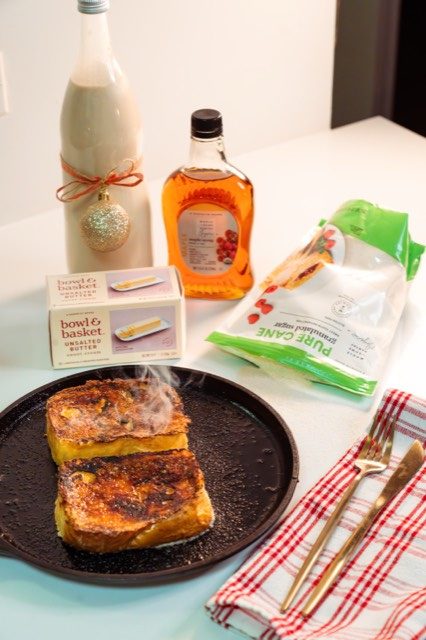
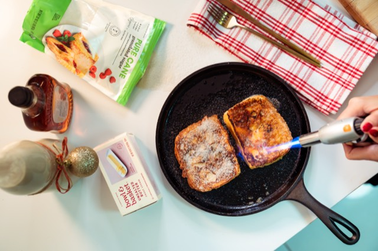
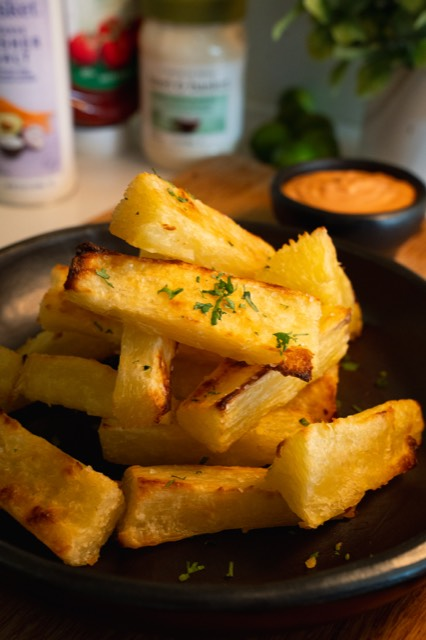
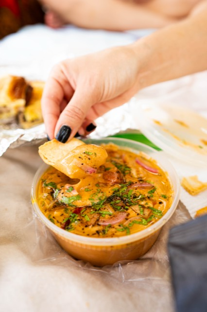
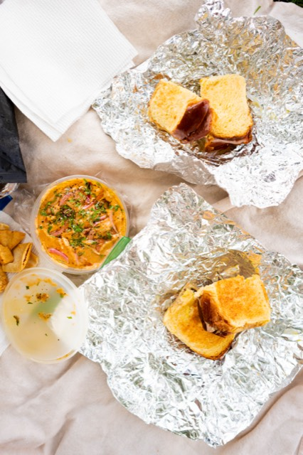

L'Industrie · Bowl & Basket · Chef Mia Castro
New York City · 2024 · Photographer
Independent NYC food work — L'Industrie pizza, Bowl & Basket, and a chef collaboration with Mia Castro.
Photos





Get in touch →